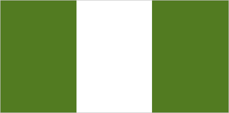
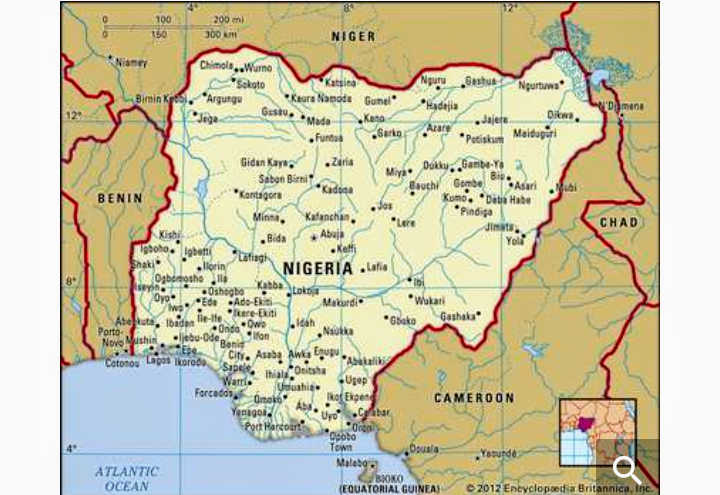

Nigeria is an African sovereign country located in West Africa.
Nigeria is a federal republic comprising of 36 states and the Federal Capital Territory(FCT), with the
capital,
Abuja.
Nigeria is officially referred to as the Federal Republic of Nigeria and nicknamed the "Giant of Africa"

Nigeria is home to more than 200 million people with hundreds of different ethnicities, languages and
butterfly
species.
The country is blessed abundantly with natural resources, notably large deposits of petrol and natural gas.
Nigeriagained its independence from United Kingdom(UK). It was declared and recognised on the 1st of October
1960.
Some Tourist Attractions In Nigeria
Nigeria is a beautiful country brimmed with many inspiring natural atrractions. They include:
Yankari Game Reserve
Lekki Conservation center
Victoria Island, Lagos
Zuma Rock
Olumo Rock
Tarkwa Bay Beach
Nike Art Center
National Museum, Lagos
Idanre Hill peak
Agodi Garden

Ten Interesting Facts About Nigeria
Here are ten interesting facts about Nigeria:
Nigeria is the seventh most populous country in the world.
The most practiced religions are Christian and Islamic religions.
The town of Igbo-ora is known as the nation's home for twins.
Nigeria is a diverse multiethnic country with more than 520 spoken languages.
Lagos which was the former capital of Nigeria before being moved to Abuja is the country's largest and
most
populous country and has been dubbed
Nollywood,the country's film industry is one of the largest film producers in world,second only to
India's
Bollywood.
Nigeria ia home to Aliko Dangote,the richest man in Africa.
Nigeria is the largest economy in Africa,largely due to it's export market.
Like in other African countries,Nigeria considers the left hand to be unclean,and using it a sign of
disrespect.
Nigeria has remained a member of thr British Commonwealth,an association of 53 sovereign states despite
gaining its independence in 1960. Nigeria is also a member of the African Union.